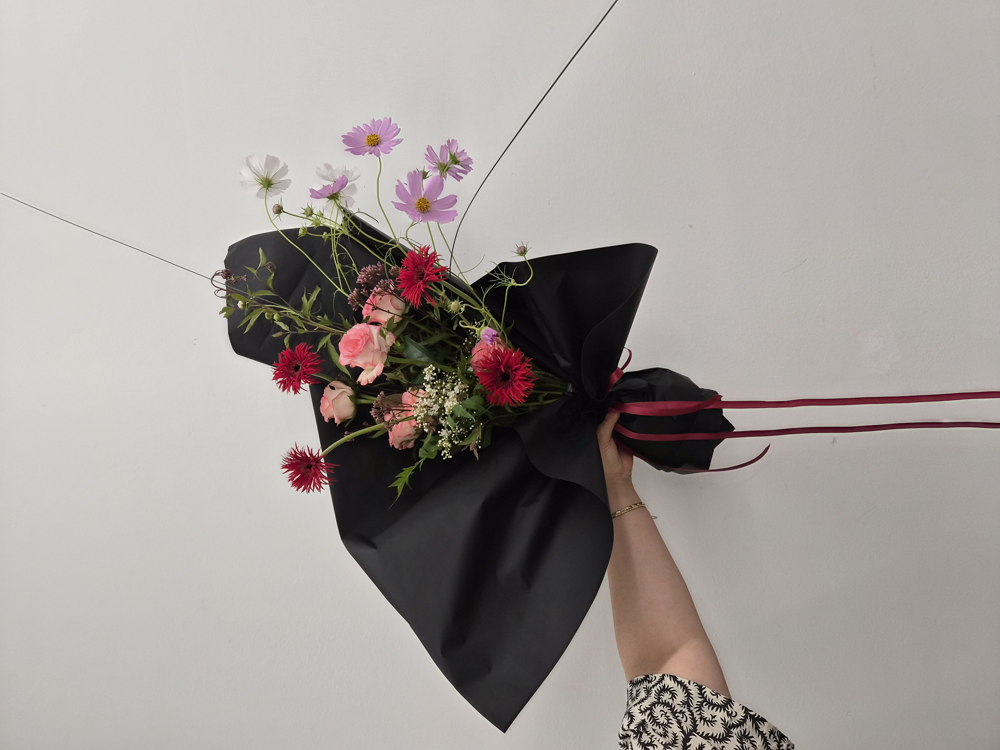
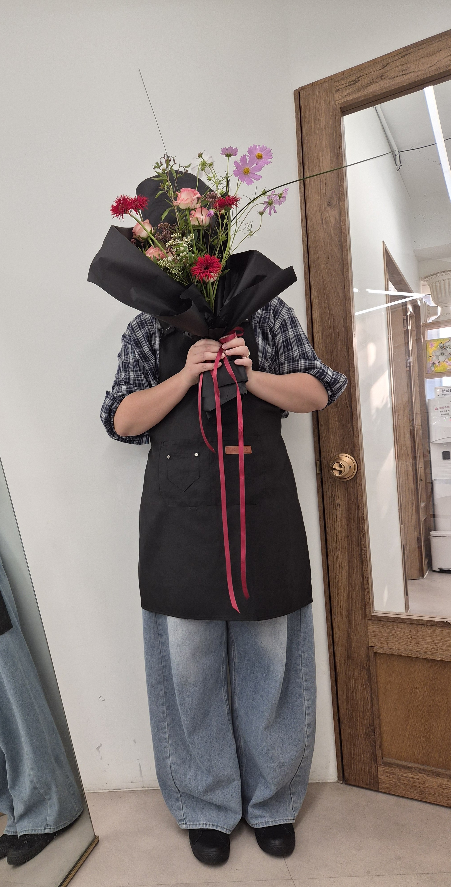
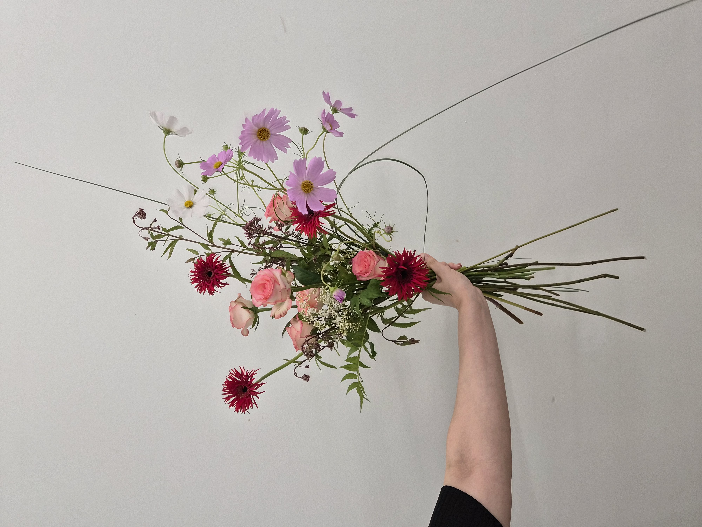
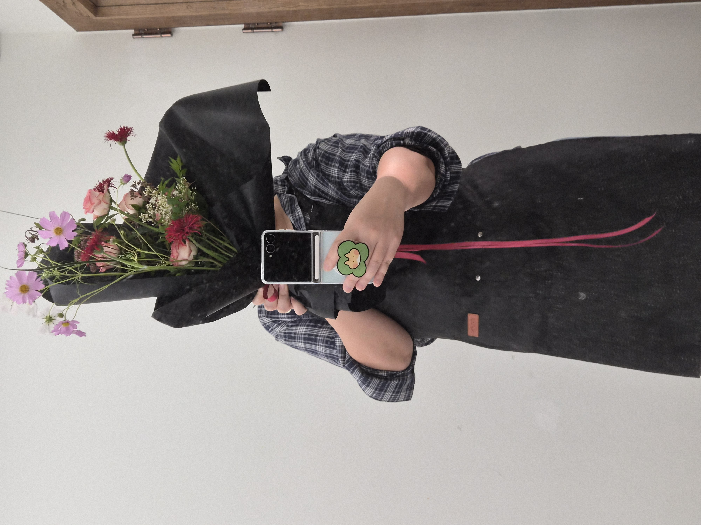

CLASS WORK · HAND-TIED
2026.09.15
FORMAL LINEAR
HAND-TIED BOUQUET
線と余白を活かしたフォーマルリニア
05 / CLASS WORK
CONCEPT
LINE,
RHYTHM
& TENSION.
포멀 리니어는 덩어리보다 선, 방향, 긴장감이 먼저 읽히는 형식입니다. 이번 작업에서는 중심에 쥬밀리아 장미를 응집해 무게를 잡고, 실거베라와 향등골로 강한 포인트를 더했습니다. 코스모스와 베어그라스, 신지매의 선을 바깥으로 확장해 비대칭의 흐름을 만들었습니다.
쥬밀리아 장미와 코스모스의 핑크 톤에 실거베라와 향등골의 딥 레드를 더하고, 가는 선 소재와 그린을 사이에 남겨 화면이 무겁게 닫히지 않도록 조절했습니다. 한쪽으로 기울 듯 뻗는 실루엣 안에서도 중심축이 무너지지 않도록 균형을 맞췄습니다.
フォーマルリニアは塊よりも線、方向、緊張感が先に読まれるスタイルです。 今回は中心にバラ ‘ジュミリア’ を集めて重心をつくり、 スパイダーガーベラとユーパトリウムで強いポイントを加えました。 コスモス、ベアグラス、シンジメのラインを外側へ広げることで非対称の流れをつくり、 ピンクと深いレッドの対比の中にも余白が残るように整えています。
COLOR PALETTE
色の構成
PINK,
RED,
BLACK.
쥬밀리아 장미와 코스모스의 핑크 톤에 실거베라와 향등골의 짙은 레드를 더해 선명한 대비를 만들었습니다. 블랙 포장은 꽃의 색을 더욱 또렷하게 보이게 하고, 와인 컬러 리본은 전체 톤을 한층 성숙하게 묶어 줍니다.
バラ ‘ジュミリア’ とコスモスのピンクに、 スパイダーガーベラとユーパトリウムの深いレッドを重ね、 鮮やかなコントラストをつくりました。 黒いラッピングは花の色をより際立たせ、 ワインカラーのリボンが全体を落ち着いた印象にまとめます。
SOFT PINK
#F4B3C2CRIMSON RED
#D9345BPALE WHITE
#F1ECF2GREEN LINE
#7D955AMATTE BLACK
#1C1C20
실제로 들었을 때는 블랙 포장과 와인 리본이 꽃 색을 더 강하게 끌어올리고, 위로 길게 솟는 코스모스와 선 소재가 포멀 리니어 특유의 날렵한 인상을 더 분명하게 보여 줍니다.
実際に持つと、黒いラッピングとワイン色のリボンが花の色をより強く引き立て、 上へ伸びるコスモスと線素材がフォーマルリニア特有のシャープな印象をより明確に見せます。
MATERIALS
使用花材
쥬밀리아 장미는 중심의 부드러운 매스를 만들고, 실거베라와 향등골은 짙은 색과 날카로운 질감으로 시선을 잡습니다. 코스모스는 긴 곡선과 가벼운 꽃 얼굴로 외곽을 확장하고, 베어그라스와 신지매는 가는 선과 그린의 리듬을 더해 포멀 리니어의 구조를 강화합니다.
バラ ‘ジュミリア’ が中心のやわらかなマスをつくり、 スパイダーガーベラとユーパトリウムが深い色とシャープな質感で視線を引きます。 コスモスは長い曲線で外側へ広がり、 ベアグラスとシンジメが細いラインとグリーンのリズムを加えて フォーマルリニアの構造を支えています。
쥬밀리아 장미
バラ ‘ジュミリア’
실거베라
スパイダーガーベラ
향등골
ユーパトリウム
코스모스
コスモス
베어그라스
ベアグラス
신지매
シンジメ
CENTER MASS
+ OUTER LINE
中心の量感と、
外へ広がるライン構成。

손에 쥔 상태에서는 중앙의 쥬밀리아 장미가 무게를 잡고, 실거베라와 향등골이 색과 질감의 포인트를 만들며, 코스모스와 베어그라스, 신지매의 선이 바깥으로 흐르며 공간을 넓히는 구조가 더 뚜렷하게 보입니다.
手に持った状態では、中央のバラ ‘ジュミリア’ が重心を支え、 スパイダーガーベラとユーパトリウムが色と質感のポイントをつくり、 コスモス、ベアグラス、シンジメのラインが外へ流れながら 空間を広げる構造がよりはっきり見えます。
COMPOSITION
構成とバランス
AXIS,
ASYMMETRY,
SPACE.
포멀 리니어의 핵심은 모든 요소가 자유롭게 흩어지는 것처럼 보여도, 실제로는 눈에 보이지 않는 중심축 안에서 관계를 유지하는 데 있습니다. 이번 부케는 가운데 쥬밀리아 장미가 중심을 만들고, 위로 솟는 코스모스와 바깥으로 뻗는 베어그라스가 큰 방향성을 형성합니다.
실거베라와 향등골은 시선이 머무는 지점을 여러 군데에 배치해 리듬을 만들고, 신지매는 중심과 외곽을 연결하는 그린의 흐름을 더합니다. 여백이 많은 부분과 밀도가 높은 부분을 구분하고, 길게 뻗는 베어그라스를 남겨 전체 실루엣이 화면 바깥까지 이어지는 듯한 인상을 만들었습니다.
フォーマルリニアの核は、すべての要素が自由に散って見えても、 実際には見えない中心軸の中で関係を保っていることにあります。 中央のバラ ‘ジュミリア’ が重心をつくり、 上へ伸びるコスモスと外へ広がるベアグラスが大きな方向性をつくります。 スパイダーガーベラとユーパトリウムは視線を止める位置を複数つくり、 シンジメは中心と外側をつなぐグリーンの流れを加えています。
FINAL VIEW
完成したかたち

블랙 포장은 라인의 방향과 컬러 대비를 한층 선명하게 보여 줍니다. 풍성한 포장보다 형태를 떠받치는 프레임처럼 작동해, 중심부의 밀도와 외곽 선의 움직임이 더 또렷하게 읽히도록 했습니다.
黒いラッピングはラインの方向と色のコントラストをより鮮明に見せます。 装飾的なボリュームというより、形を支えるフレームのように働き、 中心の密度と外側の線の動きがより明確に読めるようにしました。
SILHOUETTE CHECK
LONG LINE,
LIGHT SPACE
& BALANCE.
실제 착장과 함께 보면 부케의 세로 길이와 라인 확장이 더 명확하게 읽힙니다. 포멀 리니어는 단지 길게 뻗는 형태가 아니라, 비워 둔 공간까지 하나의 형태로 작동하게 만드는 구성이기 때문에 인체 스케일과 함께 확인했을 때 특징이 더욱 잘 드러납니다.
実際に持った状態で見ると、ブーケの縦の長さとラインの広がりがより明確に読めます。 フォーマルリニアは単に長く伸びる形ではなく、 空けておいた余白までも形として機能させる構成であるため、 人のスケールと合わせて見ることで特徴がよりはっきりします。
REFLECTION
制作を振り返って
ORDER,
MOVEMENT,
RESTRAINT.
라인을 강조하는 작업은 한 줄기만 과해져도 전체가 불안정해 보이기 쉽고, 반대로 너무 정리되면 포멀 리니어 특유의 긴장감이 사라집니다. 그래서 어떤 줄기를 남기고, 어떤 줄기를 덜어낼지 판단하는 과정이 특히 중요했던 작업이었습니다.
이번 작업을 통해 중심 덩어리의 밀도와 바깥 선의 길이를 분리해서 생각하는 연습이 되었고, 여백 역시 비어 있는 공간이 아니라 형태의 일부라는 점을 더 분명하게 느낄 수 있었습니다.
ラインを強調する制作では、一本の線が強すぎるだけでも全体が不安定に見えやすく、 逆に整えすぎるとフォーマルリニア特有の緊張感が失われます。 そのため、どの線を残し、どの線を引くかを判断する過程がとても重要でした。
중심축의 안정감을 유지한 채, 더 적은 소재로도 선의 흐름과 여백을 분명하게 드러내는 포멀 리니어 실루엣 만들기